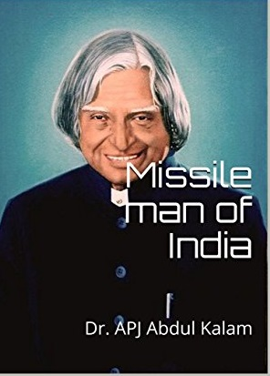

Former Indian President APJ Abdul Kalam Dies At Missile Man of India

Dr. APJ Abdul Kalam is known as the Missile man of India due to his contributions to the development of ballistic missile and launch vehicle technology. When he returned to the DRDO in 1982, he oversaw a programme that resulted in a number of successful missiles, earning him the moniker Missile Man.